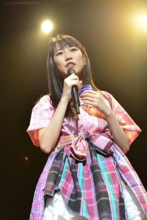
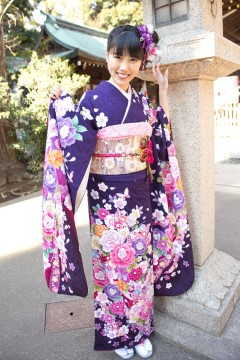
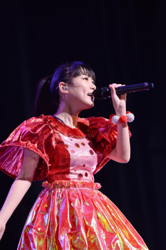
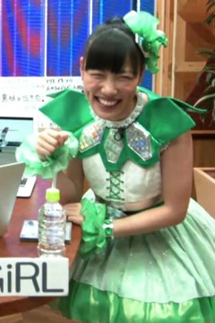
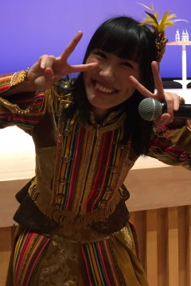

神奈川縣
神奈川縣
西元1993年6月21日出生 （歲）
O型
 雙子座
雙子座
 酉雞
酉雞
2006年於滑冰場造成左手骨折
2007年加入星塵傳播
2008年與伊倉愛美、和川ミユウ（和川未優）、高井つき奈、川又智菜美（弓川留奈）成為桃色幸運草誕生前選拔成員之一：0期成員
2008年5月17日桃色幸運草誕生，桃色幸運草最初期成員，於【神奈川．川崎アゼリア】活動【スターダスト芸能3部新人発掘オーディション】登場
2008年將桃色幸運草隊長交接給百田夏菜子
2009年3月中學畢業
2009年【山田電機Presents ～桃色幸運草JAPAN Tour 2009 桃色Typhooooon！～（ヤマダ電機Presents ～ももいろクローバーJAPANツアー 2009 ももいろTyphooooon！～）】在【広島．テックランドアルパーク前店】扮演華人知名演員【周潤發】
2009年09月20日【桃色幸運草 CHAMPION CARNIVAL AKBA 5DAYS（ももいろクローバー CHAMPION CARNIVAL AKBA 5DAYS）】決定了永遠的代表色
2010年於【福井．鯖江市】宣傳眼鏡工藝，後續享用鱒魚壽司的事件成為與玉井詩織、有安杏果【鱒魚壽司來三份（マス寿司三人前）】團隊名稱由來，2012年【桃草春季幹大事 2012 橫濱體育館 怎麼會有2DAYS（ももクロ春の一大事 2012 横浜アリーナ まさかの2DAYS）】以【時尚中心．思夢樂（ファッションセンター．しまむら）】登場
2010年【主流Tour 2010 春季最強錦標戰 ～約二十八回合炎之對抗～：第十九至二十五回對抗（メジャーツアー 2010 春の最強タッグ決定戦 ～炎の約28番勝負～：19-25番勝負）】最後一場【東京．東京ドームシティ】化了一臉【讀賣巨人】吉祥物【ジャビット】妝
2010年12月網路上發現高城蕾妮開始有點過瘦的傾向，難免聯想到同年3月【桃色幸運草主流出道記者會】的體重檢測條件影響
2011年【附屬小國高校桃子蝦學園 ～桃色幸運草部 之貳（小中高一貫ももえび学園 ～ももいろクローバーの部 其の弐）】DVD發行紀念活動，在【東京．タワーレコード新宿店】首次表演了一口氣喝完可樂
2011年於【東京．神田明神】參與【神田明神「七夕祭」短冊奉納】活動全員畫了一臉熊貓妝
2011年【SUMMER DIVE 2011 ～安安極樂門～（サマーダイブ 2011 ～極楽門からこんにちは～）】曲目【椰子☆暑期（ココ☆ナツ）】發生其水槍誤擊百田夏菜子鼻子受傷事件
2011年由日本文化廳舉辦【文化庁メディア芸術祭 ドルトムント展 2011】遠征【德國．多特蒙德．Borussia Dortmund】
2011年【LOUD PARK 11】樂團【ANIMETAL USA】合作曲目【マジンガーZ】，並畫了一臉致敬傳奇搖滾樂團【KISS】妝登場
2011年【2011 プロレスLOVE in 両国 vol.13】以覆面造型自稱【GREAT幸運草Z】登場，之後除了畫了一臉摔角彩繪外，還有一段噴毒霧表演
2011年【フジテレビ「MUSIC FAIR」】與前輩【稲垣潤一】合作曲目【1ダースの言い訳】，前輩成為被臉頰KISS目標之一
2012年於【東京．六本木ヒルズ】參與【夢見るMyマイメロディ展】活動，設計專屬的【マイメロディ】
2012年3月高校畢業
2012年【テレビ東京「ゴッドタン」】與【（バナナマン）日村勇紀】合作誕生【日村蕾妮（ヒムれに）】名場面
2012年廣告【LOTTE】冰淇淋【爽】配合奧運宣傳，部分廣告代表色轉換黑色系服飾
2012年於【埼玉．さいたまスーパーアリーナ】舉辦【さだまさしThe Birthday Party in Masashi Super Arena】與前輩【さだまさし】合作曲目【むかし子供達は】，前輩成為被臉頰KISS目標之一
2012年【桃草春季幹大事 2012 橫濱體育館 怎麼會有2DAYS（ももクロ春の一大事 2012 横浜アリーナ まさかの2DAYS）】與有安杏果組成【事務所請幫推小隊（事務所に推され隊）】
2012年由馬來西亞青年及體育部舉辦【National Youth Day Celebration（HARI BELIA NEGARA 2012）】遠征【馬來西亞．布城】，並與馬來西亞首相【Najib Razak】握手與交流
2012年於【東京．Zepp東京】舉辦【坂崎幸之助のお台場フォーク村デラックス 2012】與前輩【（THE ALFEE）坂崎幸之助】合作曲目【SWEAT&TEARS】，前輩成為被臉頰KISS目標之一
2012年團體擔任【長崎クローバー大使】
2012年團體【第25回 2012 小学館DIMEトレンド大賞】中的【話題の人物賞】受獎
2012年【テレビ朝日「MUSIC STATION」】節目當日與百田夏菜子、玉井詩織突然宣告組成【三國同盟（三国同盟）】
2013年團體【第13回 ビートたけしのエンタテインメント賞】中的【日本芸能大賞】受獎
2013年愚人節於【週刊ビッグコミックスピリッツ 18号】玩了一次高城蕾妮畢業團體更名【桃色幸運草ZZ（ももいろクローバーZZ）】事件梗
2013年【Ustream「Ustream大賞受獎紀念 24小時我就不客氣啦TV（Ustream大賞受賞記念 24時間いただきますっTV）」】演唱活動【第一次換色挑戰】：【粉】
2013年【フジテレビ「新堂本兄弟」】與前輩【（THE ALFEE）高見沢俊彦】合作曲目【SWEAT&TEARS】，前輩成為被臉頰KISS目標之一
2013年於【神奈川．日産スタジアム】舉辦【桃草夏季犯蠢主題樂園 WORLD SUMMER DIVE 2013.8.4 日產體育場大會（ももクロ夏のバカ騒ぎ WORLD SUMMER DIVE 2013.8.4 日産スタジアム大会）】曲目【日本笑顏百景（ニッポン笑顔百景）】發生裙子換裝過度登場事件
2013年於【千葉．QVCマリンフィールド&幕張メッセ】舉辦【SUMMER SONIC 2013】，其中曲目【勞動讚歌（労働讃歌）】表演一段假酒瓶敲爆頭做結尾
2013年團體獲得【MTV Japan】舉辦的【2013 MTV Europe Music Awards】中的【Best Japanese Act】
2013年於【千葉．袖ケ浦海浜公園】舉辦【氣志團万博 2013 ～房総爆音梁山泊～】，其中曲目【出動！怪盜少女（行くぜっ！怪盗少女）】表演一段連續假酒瓶敲爆頭做結尾，另外【（氣志團）綾小路翔】被【千年殺】攻擊、【（キシマム ザ ホルモン）ダイスケはん】被踢屁股
2013年【フジテレビ「FNS歌謡祭」】與前輩樂團【THE ALFEE】合作曲目【木枯らしに抱かれて】，前輩【（THE ALFEE）桜井賢】成為被臉頰KISS目標之一，另外發生被吉祥物【くまモン】不小心誤擊事件
2013年【フジテレビNEXT「加碼桃色聖誕 2013！Party in ODAIBA（もうひとつの、ももいろクリスマス 2013！Party in ODAIBA）」】與前輩【（THE ALFEE）高見沢俊彦】合作曲目【星空のディスタンス】，前輩【（THE ALFEE）高見沢俊彦】【（THE ALFEE）坂崎幸之助】成為被臉頰KISS目標之一
2013年【テレビ朝日「MUSIC STATION SUPER LIVE 2013」】節目結尾不明顯的【換色番外篇】：【黃】
2014年於【群馬．グリーンドーム前橋】舉辦【3B junior LIVE FINAL "俺の藤井" 2014】，其中曲目【勞動讚歌（労働讃歌）】表演一段被成員與自己假酒瓶敲爆頭
2014年1月成人式
2014年1月於節目【福岡放送「めんたいワイド」】不小心誤擊【古賀ゆきひと】
2014年【個推曼哈頓♡ ～我的老天鵝～（おしいろマンハッタン♡ ～なんてこったパンナコッタ～）】演唱活動【第二次換色挑戰】：【紅】
2014年【MTV LIVE 2014 supported by SHIDAX with LIVE DAM ～"美少女戦士セーラームーン" THE 20TH ANNIVERSARY MEMORIAL TRIBUTE～】化了一臉動畫【美少女戰士】的【月野兔】妝
2014年【日本テレビ「1億人の大質問！？笑ってコラえて！」】對粉絲【千年殺】攻擊
2014年【フジテレビ「FNS歌謡祭」】與前輩【（前ラッツ&スター）鈴木雅之】合作曲目【渋谷で5時】，前輩【（前ラッツ&スター）鈴木雅之】成為被臉頰KISS目標之一
2014年【GIRLS' FACTORY 14】穿多層短褲，並在短褲寫字與脫褲慶祝先前【フジテレビ「FNS歌謡祭」】獲得最高收視演出
2014年團體擔任國際巨星【Lady Gaga】暖場演唱【LADY GAGA'S artRAVE：the ARTPOP ball】
2014年接受來自桃草武士【田中将大】的ALS冰桶挑戰，與玉井詩織、有安杏果成為執行成員之一
2015年【俺のザ．ベストテン】以2014年【T-SPOOK ～TOKYO HALLOWEEN PARTY～】與佐佐木彩夏飾演【雙子櫻桃】而組成【山形】
2015年於【愛知．NAGOYA CLUB QUATTRO】舉辦【高城的60分鐘4回合對抗（高城の60分4本勝負）】為本人與桃色幸運草Z首場官方個人演唱活動
2015年【七龍珠Z】動畫劇場【七龍珠Z 復活的「F」】記者會扮演【克林】登場
2015年【テレ朝動画「川上アキラの人のふんどしでひとりふんどし」】桃草節目【換色番外篇】：【綠】
2015年書籍【週刊ビッグコミックスピリッツ 27号】與【（私立恵比寿中学）真山りか】【（チームしゃちほこ）大黒柚姫】組成【紫式部Team（Team 紫しきぶ）】
2015年參與【Anime Expo 2015】遠征【美國．洛杉磯．Los Angeles Convention Center、美國．洛杉磯．Microsoft Theater】
2015年彩排【桃色幸運草Z 桃神祭 2015 ECOPA體育場大會 ～額頭大神親臨～（ももいろクローバーZ 桃神祭 2015 エコパスタジアム大会 ～御額様ご来臨～）】【桃色幸運草Z 桃神祭 2015 ECOPA體育場大會 ～遠州大狂歡～（ももいろクローバーZ 桃神祭 2015 エコパスタジアム大会 ～遠州大騒儀～）】演唱活動不小心左手的手腕遠端橈骨骨折，造就未來的【鋼鐵少女】暱稱，同年【テレビ朝日「MUSIC STATION ウルトラFES」】特別飾演【機器戰警】戰損版與【タモリ】登場
2015年【テレ朝動画「川上アキラの人のふんどしでひとりふんどし」】桃草節目【換色番外篇】：【綠】
2016年團體獲得【国際宝飾展】舉辦的【第27回 日本ジュエリーベストドレッサー賞】中的【特別賞】
2016年3月為桃色幸運草Z出道第一次開始嘗試比較短一點的長髮登場
2016年由日本與越南政府合作舉辦【さくら祭り 2016】遠征【越南．下龍市、越南．李太祖廣場】
2016年【實地勘查 ～桃草大談～ vol.1 山形（ロケハン ～ももクロおおいにかたる～ vol.1 山形）】演唱活動【換色番外篇】：【黃】
2008年與當時成員百田夏菜子，以及早見朱莉一起參與樂團【little by little】單曲【Pray】MV演出
2008年參與【詩音】單曲【Last Song】MV演出
2008年與當時成員百田夏菜子、玉井詩織、伊倉愛美、和川ミユウ（和川未優），以及早見朱莉一起參與團體【バーボンズ】單曲 【autumn】YT 【雪国】YT MV演出
2009年與當時成員百田夏菜子與玉井詩織，以及早見朱莉一起參與團體【バーボンズ】單曲 【絆】YT MV演出
2010年與百田夏菜子、早見朱莉擔任書籍【オタポケ 創刊号】封面拍攝
2010年團體擔任書籍【HMV店頭誌】【the music & movie master 215】【スーパーエンタメ新聞アニカンR Vol.80】【ネクストブレイクアイドル No.1】封面拍攝
2010年團體擔任書籍【週刊少年サンデー No.49】封面拍攝之一
2010年團體擔任書籍【B.L.T. U-17 Vol.16】封面拍攝版本之一
2011年團體擔任書籍【VOICHA！Vol.13】【スーパーエンタメ新聞アニカンR Vol.102】【週刊少年サンデー No.21】【スーパーエンタメ新聞アニカンR Vol.125】【ミューズクリップ】封面拍攝
2011年團體擔任書籍【TV Bros. 4月2日号】封面拍攝之一
2011年團體擔任書籍【CD Journal 8月号】【Cool-up IDOL 9月号】【サマー．アイドル7 2011 SUMMER】【スーパーエンタメ新聞アニカンR Vol.141】【楽遊 vol.22】封面拍攝
2011年團體擔任書籍【POP'nアイドル！】【bounce 334号】封面拍攝版本之一
2011年團體擔任書籍【B.L.T. U-17 Vol.20】【Top Yell 10月号】【Top Yell 1月号】【週刊ヤングジャンプ No.43】【週刊少年マガジン No.53】封面拍攝
2011年團體擔任書籍【週刊SPA！1月3．10合併号】【Quick Japan Vol.95】封面拍攝
2011年團體擔任書籍【J-POP GIRLS キュン！】【JUNON 11月号】【デジモノステーション 11月号】【CM NOW VOL.153】【DOMMUNE OFFICIAL GUIDE BOOK 2】封面拍攝之一
2011年擔任書籍【HONKOWA 1月号】封面拍攝之一
2012年團體擔任書籍【J-POP GIRLS キュン！vol.2】【月刊少年ライバル 4月号】【月刊少年ライバル 5月号】【HARAJUKU】【CM美少女U-19 SELECTION 100 2012】封面拍攝之一
2012年團體擔任書籍【月刊スカパー！2月号】【月刊少年ライバル 3月号】【Top Yell 3月号】【月刊HMV 3月号】【FREECELL 特別号】封面拍攝
2012年團體擔任書籍【週刊ヤングジャンプ No.15】【オリ☆スタ 3月19日号】【月刊ヤングマガジン No.4】【GIRL POP 2012 SPRING】【FREECELL 特別号 5】封面拍攝
2012年團體擔任書籍【Top Yell 6月号】【スカパー！TVガイド 6月号】【SWIMMER Ready Go！！スイマー&チョコホリック】【日経エンタテインメント！7月号】【Quick Japan Vol.102】封面拍攝
2012年生日紀念商品：包裹巾組合
2012年擔任書籍【月刊少年ライバル 7月号】封面拍攝之一
2012年團體擔任書籍【MARQUEE vol.91】【ch FILES 7月号】【MUSIC MAGAZINE 7月号】【Campus Walker】【風とロック 6月号】封面拍攝
2012年團體擔任書籍【日経TRENDY 7月号】【別冊少年マガジン 8月号】【週刊少年マガジン No.33】【花とゆめ 16号】【週刊少年マガジン No.35】封面拍攝之一
2012年團體擔任書籍【週刊ヤングジャンプ No.30】封面拍攝版本之一
2012年團體擔任書籍【週刊プレイボーイ No.29】【週刊少年マガジン No.34】【ニッポン放送タイムテーブル 8．9月号】【週刊ヤングジャンプ No.36】【月刊少年ライバル 9月号】封面拍攝
2012年團體擔任【しまむら】模特兒
2012年團體擔任書籍【B.L.T. PLUS VOL.4】【Top Yell 10月号】【De☆View 11月号】【週刊ビッグコミックスピリッツ 47号】【週刊少年マガジン No.50】封面拍攝
2012年擔任書籍【HONKOWA 10月号】封面拍攝之一
2012年團體擔任書籍【あえるアイドル大百科】【MUSIC MAGAZINE 増刊 アイドル．ソング．クロニクル 2002-2012】【月刊少年ライバル 10月号】【グループアイドル全力応援SPECIAL】【東京かわら版 467号】封面拍攝之一
2012年與玉井詩織擔任書籍【FREECELL 特別号 11】封面拍攝
2012年團體擔任書籍【Top Yell 12月号】【小学一年生 1月号】【月刊少年ライバル 1月号】【BREAK MAX 2月号】封面拍攝之一
2012年團體擔任書籍【Tokyo Walker 11月30日号】【Yokhama Walker 11月27日号】【Kansai Walker 11月27日号】【Tokai Walker 11月27日号】【BREAK MAX 1月号】封面拍攝
2012年團體擔任書籍【北海道 Walker 冬号】【ミューズクリップ】【週刊ヤングマガジン No.52】【MUSIC Fun Live Information Magazine FUN Vol.10】【日経エンタテインメント！1月号】封面拍攝
2012年擔任書籍【B.L.T.北海道版 1月号】封面拍攝
2012年團體擔任書籍【B.L.T. 2月号】【週刊ビッグコミックスピリッツ 4．5合併号】【NYLON JAPAN 2月号】【月刊少年ライバル 2月号】封面拍攝
2013年團體擔任書籍【BREAK MAX 3月号】【BREAK MAX 4月号】【月刊少年ライバル 3月号】【月刊コミックゼノン 4月号】【MEN'S NON-NO 6月号】封面拍攝之一
2013年團體擔任書籍【オリ☆スタ 1月28日号】【NHKウィークリーステラ 2/8号】【あそびーくる】【bea's up 4月号】【smart 5月号】封面拍攝
2013年參與樂團【ステレオポニー】單曲【さよならの季節】MV演出
2013年擔任書籍【Goo Bike 4/1号】【B.L.T.北海道．宮城版 5月号】【B.L.T.北海道．宮城版 11月号】【20±SWEET 2013 AUTUMN】封面拍攝
2013年團體擔任書籍【週刊プレイボーイ No.14】【SHUTTER magazine Vol.8】【週刊ビッグコミックスピリッツ 18号】【月刊Audition 5月号】【the music & movie master 243】封面拍攝
2013年團體擔任書籍【MUSIC MAGAZINE 5月号】【週刊ヤングジャンプ No.21．22】【OMOSAN STREET 25号】【週刊プレイボーイ No.20】【S Cawaii！ 6月号】封面拍攝
2013年團體擔任書籍【Seventeen 6月号】【マーガレット No.11】【Quick Japan Vol.111】【NHKウィークリーステラ 1/3号】【JUNON 2月号】封面拍攝版本之一
2013年生日紀念商品：造型帽組合
2013年團體擔任書籍【日経エンタテインメント！8月号】【週刊ヤングマガジン No.35】【週刊少年サンデー No.35】【Soup. 12月号】【週刊ビッグコミックスピリッツ 49号】封面拍攝
2013年與玉井詩織、佐佐木彩夏、有安杏果擔任書籍【週刊ビッグコミックスピリッツ 36．37合併号】封面拍攝
2013年團體擔任書籍【週刊ヤングマガジン No.49】【週刊SPA！11月12日号】【週刊プレイボーイ No.46】【音楽と人 12月号】【週刊少年マガジン No.49】封面拍攝
2013年團體擔任書籍【ザテレビジョン日本生命版 12/20号】【テレビ31日本生命版 1/3号】【B.L.T. 2月号】封面拍攝
2014年團體擔任書籍【日経エンタテインメント！3月号】【週刊ビッグコミックスピリッツ 18号】【週刊少年マガジン No.23】【風とロックと写真】【週刊Vetter No.189】封面拍攝
2014年擔任書籍【Quick Japan Vol.112】封面拍攝
2014年團體擔任書籍【WEEKLY WiSE No.390】【Tokyo Walker 5月2日号】【Kansai Walker 5月2日号】【福岡 Walker 5月号】【Tokai Walker 5月号】封面拍攝之一
2014年生日紀念商品：吊嘎組合
2014年團體擔任書籍【エンタミクス 号外「悪夢ちゃん The 夢ovie 6年2組 夢見帳」】【月刊少年ライバル 6月号】【悪夢ちゃん 夢のつづき編】【週刊ビッグコミックスピリッツ 24号】【月刊大人ザテレビジョン 10月号】封面拍攝之一
2014年團體擔任書籍【週刊ビッグコミックスピリッツ 39号】【B.L.T. 2月号】封面拍攝
2014年團體參與【さだまさし】單曲 【君は歌うことが出来る】YT MV演出
2015年團體擔任書籍【週刊ビッグコミックスピリッツ 8号】【スカパー！TVガイドBS＋CS 2月号】【週刊SPA！2月10．17合併号】【日経エンタテインメント！3月号】【別冊FLIX Vol.2】封面拍攝
2015年團體擔任書籍【GO！GO！GUITAR 3月号】【TV LIFE 2/27号】封面拍攝之一
2015年團體擔任書籍【帷幕升起（幕が上がる）】封面拍攝版本之一
2015年團體擔任書籍【HR 3．4月号】【読売ファミリー 2月12日号】【PICT-UP 93】【キネマ旬報 No.1683】【週刊ビッグコミックスピリッツ 13号】封面拍攝
2015年與百田夏菜子、玉井詩織、佐佐木彩夏擔任書籍【Quick Japan Vol.118】封面拍攝
2015年團體擔任書籍【ジュニアエラ 5月号】【AERA 4月27日号】【別冊FLIX plus Vol.1】【シアターガイド 6月号】【演劇ぶっく 6月号】封面拍攝
2015年擔任書籍【週刊ビッグコミックスピリッツ 27号】封面拍攝之一
2015年生日紀念商品：斜背包組合
2015年團體擔任書籍【B.L.T. 11月号】【月刊e-みる 12月号】【Quick Japan Vol.123】【＋act. 1月号】封面拍攝
2016年團體擔任書籍【FLEEK 1月号】【KEP 2月号】【TOKYO FM 2月号】【7ぴあ 2月号】【the music & movie master 276】封面拍攝
2016年團體擔任書籍【日経エンタテインメント！3月号】【ミューズクリップ】【TV Bros. 2月13日号】【Va Vol.163】【MUSIC MAGAZINE 3月号】封面拍攝
2016年團體擔任書籍【SWITCH 3月号】【WEEKLY WiSE No.493】【週刊Vetter No.269】封面拍攝
2016年團體擔任書籍【週刊ビッグコミックスピリッツ 35周年記念コラボグラビアMOOK】封面拍攝之一
2016年擔任書籍【太宰府自慢 第五号（限定帯付き）】封面拍攝
2016年生日紀念商品：背包組合
【美少女戦士セーラームーン -La Reconquista-】【吉本新喜劇】
【帷幕升起（幕が上がる）】
【BS-i「東京少女 山下リオ」】【NHK Eテレ「青山ワンセグ開発 僕にはまだ友だちがいない」】【テレビ東京「ウレロ☆未完成少女」】【日本テレビ「悪夢ちゃん スペシャル」】
【テレ朝動画「桃子連續劇（ももドラ）」】【NHK「天使JUMP（天使とジャンプ）」】
【市民ポリス69】【モテキ】【NINIFUNI】
【白瞳（シロメ）】【帷幕升起（幕が上がる）】
【サンマとカタール ～女川つながる人々】
【山田電機】【三菱電機】【東京JOYPOLIS】【康寶】【桃屋】【LOTTE】【TAKARA TOMY】【百事可樂】【FamilyMart】【萬代南夢宮娛樂】【スカパー！】【參天製藥】【comico】【米久】【AEON MALL】【SUZUKI】
【かよえ！チュー学】【猛烈宇宙海賊】【おかっぱちゃん旅に出る】【めざましテレビ 紙兎ロペ】【七龍珠Z 復活的「F」】
【テレビ岩手「ねだらX」】【岩手めんこいテレビ「BEATNIKS」「はちきゅん」「mitスーパーニュース」】【中部日本放送「IMPACT」】【フジテレビ動画コンテンツ「つか金フライデーX」】【名古屋テレビ「バグルー！！」「CONTACT CAFE C」「ドデスカ！」「BOMBER-E」】【高知さんさんテレビ「サタ★マガ」】
【スカパー！「GIRLS POP NEXT」「アイドル"独断と偏見"情報局」「スカパー！アワード 2012 授賞式」「スカパー！音楽祭」】【SMOOCH.TV「Pretty Women！in ebis」】【静岡朝日テレビ「とびっきり！しずおか」】【奈良テレビ「ゆうドキッ！」】
【TBS「イチオシ！さよならシュレック！山里亮太のブサイクだって幸せになれる SP」「ライブB♪」「カミスン！」「サンデージャポン」「情報7days ニュースキャスター」「TBS24時」「はなまるマーケット」「情熱大陸」「COUNT DOWN TV」「Nスタ」「音楽の日」「ひみつの嵐ちゃん！」「エン活！」】
【TBS「爆報！THE フライデー vs サンデージャポン！！」「アッコにおまかせ！」「みのもんたの朝ズバッ！」「緊急生中継！さよなら国立競技場」「あさチャン！」「はやチャン！」「日立 世界ふしぎ発見！」「A-Studio」「王様のブランチ」「はやドキ！」】
【テレビ東京「ピラメキーノ」「ゴッドタン」「ポケモンスマッシュ！」「祝15周年！ポケモン映画名シーン超ランキングスペシャル！！」「JAPAN COUNTDOWN」「Crossroad」】【NHK BSプレミアム「J-MELO」「音楽熱帯夜」「グレートトラバース」「あなたに贈る！クリスマスソング．セレクション」「みんなDEどーもくん！」】
【日本テレビ「おもいッきりDON！」「スッキリ」「PON！」「ズームイン！！サタデー」「アイドルちん」「iCon」「ハッピーMusic」「しゃべくり007」「シューイチ」「人生が変わる1分間の深イイ話」「メレンゲの気持ち」「うわっ！ダマされた大賞」「Oha！4」「スター☆ドラフト会議」「ヒルナンデス！」】
【日本テレビ「ロンブー&チュートの芸能人ヒットソングで爆笑ショーバトル！」「ZIP！」「天才！志村どうぶつ園」「おしゃれイズム」「Music Lovers」「宝探しアドベンチャー 謎解きバトルTORE！」「AKBINGO！」「1億人の大質問！？笑ってコラえて！」「月曜よる9時はショーバト」「ダウンタウンDX」】
【日本テレビ「さんま&所の大河バラエティ！超近現代史！人間は相変わらずアホか！？」「1番ソングSHOW」「news zero」「Ozzfest Japan 2013 日本首次登場！桃色幸運草Z緊急參戰！！（オズフェスジャパン 2013 日本初上陸！ももいろクローバーZ緊急参戦！！）」「笑神様は突然に…」】
【日本テレビ「news every.」「東京暇人」「ミュージックドラゴン」「快脳！マジかるハテナ」「ザ！世界仰天ニュース」「世界まる見え！テレビ特捜部」「サンバリュ」「超直前！日本一テレビ ～歌唱王．ワラチャン．リアルロボットバトル．頭脳王～」「誰だって波瀾爆笑」「真相報道バンキシャ！」】
【日本テレビ「キユーピー3分クッキング」「高校生クイズがついに開幕！地区大会を突破しアメリカを目指せSP」「第34回 全国高等学校クイズ選手権」「リアルロボットバトル日本一決定戦！本番まで待てない見所SP」「ロボット日本一決定戦！リアルロボットバトルナビ」「元日は、TOKIO × 嵐」】
【日本テレビ「新春恒例！ポシュレオールスター初売りSP！！」「行列のできる法律相談所」「嵐にしやがれ傑作選」「日本アカデミー賞授賞式」】
【テレビ埼玉「THE BEAT TIME」「玉ニュータウン」「ごごたま」「HOT WAVE」「V-Clips」「ボールルームスターズ」】【CBCテレビ「花咲かタイムズ」「ゴゴスマ ～GOGO！Smile！～」】【NHK Eテレ「大！天才てれびくん」「シャキーン！」】【南日本放送「てゲてゲ」「ズバッと！鹿児島」】
【NHK「MUSIC JAPAN」「SHIBUYA DEEP A」「J-MELO」「大科学実験」「スタジオパークからこんにちは」「もうすぐ9時プレマップ」「ミニ番組」「秋ナビ」「地球イチバン」「紅白歌合戦 初出場歌手PR」「NHK紅白歌合戦」「しあわせニュース」「NHK NEWS おはよう日本」「NHK福祉大相撲」「明日へ」】
【NHK「あほやねん！すきやねん！」「目撃！日本列島」「みんなをつなぐ魔法のメロディー」「土曜スタジオパーク」「コレ見て！ムービー」「毎日PR！紅白」「今夜も生でさだまさし」「NHKのど自慢」「国民総参加クイズSHOW！QB47」「あさイチ」「ジョシおん！ ～大好き♡東北ガールズライブ～」】
【NHK「ニュース シブ5時」】
【WOWOW「戦慄のメタル．オールナイト」「映画工房」】【フジテレビNEXT「綾小路翔の六本木バナナボーイズ」「あたしの音楽」「きくちから」】【MUSIC ON！TV「Artist File」「サキドリ！」】
【フジテレビ「めざましテレビ」「ミューサタ」「魁！音楽番付 Eight」「笑っていいとも！」「HEY！HEY！HEY！」「ネプリーグ」「MUSIC FAIR」「新堂本兄弟」「はねるのトびら」「めざにゅ～」「知りたがり！」「とくダネ！」「VS嵐」「Mr.サンデー」「ノンストップ！」「すぽると！」】
【フジテレビ「ユメノハシラ」「志村けんのバカ殿様」「ドリフ大爆笑35周年人気スターが選んだ爆笑コント20」「FNS歌謡祭」「めざましどようび」「僕らの音楽」「ニュースJAPAN」「ハモネプリーグ」「TOKIOカケル」「プレミアの巣窟」「FNS27時間テレビ」「FNNスーパーニュース」】
【フジテレビ「20周年めざましテレビ夜の大同窓会！ウラ側すべて見せます＆超豪華じゃんけん祭り」「とんねるずのみなさんのおかげでした」「FNNスピーク」「みちのくSLギャラクシー THE NEW EAST EXPRESS」「FNS 正月だよ！オールハワイナイトフジ 2015」「音楽の時間 〜MUSIC HOUR〜」】
【フジテレビ「ホンマでっか！？TV」「水曜歌謡祭」「次ナルTV」「KinKi Kidsのブンブブーン」「魁！音楽番付 Eight」「今年もきました！FNS歌謡祭事前スペシャル」「Love music」】
【ニコニコ生放送「電波研究社 ～アニメ．ゲーム．アニソン～」「ミュージックボンバー」「『ウレロ☆未確認少女』をみんなで見よう！」「劇団ひとり、バカリズム、東京03と一緒に『ウレロ☆未完成少女』最終回を見よう！」】
【ニコニコ生放送「セーラームーン20周年記念イベント」】
【スペースシャワーTV「爆裂★エレキングダム！！」「NEW CUTS」「BIG HITS！」「オールナイトニッポン45周年感謝祭 ALL LIVE NIPPON」「SPACE SHOWER MUSIC VIDEO AWARDS」「CDショップ大賞 スペシャルLIVE」「音楽ヒミツ情報機関 MI6」「JET」「2013年の主役が勢ぞろい！大人気アーティストスペシャル」】
【テレビ朝日「FUTURE TRACKS→R」「さきっちょ☆」「見逃しチャンネル」「やじうまテレビ！」「お願い！ランキング」「今すぐ観たい！テレ朝動画アイドル SP」「おかずのクッキング」「MUSIC STATION」「ミニステ」「徹子の部屋」「CSテレ朝ナビ！！」「ブラマヨとゆかいな仲間たちアツアツっ！」】
【テレビ朝日「夏目と右腕」「ワールドプロレスリング」「モーニングバード！」「グッド！モーニング」「題名のない音楽会」「EXシアター特番」「ゴーちゃん。GIRL'S TV」「ナニコレ珍百景」「ポータル ANNニュース&スポーツ」「スーパーJチャンネル」「Mステ10時間SPウルトラFES」】
【テレビ朝日「ゴン中山&ザキヤマのキリトルTV」「関ジャム 完全燃SHOW」】
【テレビ北海道「遊びなDJサタデー」】【CS寄席チャンネル「寄席ちゃんLive」】【J:COM「U.K.のMUSIC JAPANリクエスト」】【東海テレビ「バナナマンのブログ刑事」「まるナツ 美浜海遊祭LIVE ～MUSIC WAVE 2011～」】【CSテレ朝チャンネル「ジャガイモン！」】【熊本朝日放送「くまパワ」】
【朝日放送「おはよう朝日です」「パネルクイズ アタック25」「おはようコールABC」】【毎日放送「ちちんぷいぷい」「せやねん！」「MUSIC EDGE + OsakaStyle」「痛快！明石家電視台」「せやねん！」「MBS SONG TOWN」】
【福岡放送「めんたいワイド」「ナイトシャッフル」「バリはやッ！」「ナイトシャッフルG」】【Ustream「TAMASHII NATION 2011 前夜祭スペシャル放送」「梶原放送局」「Ustream大賞」】【スペースシャワーTV Plus「ヘビロテ！」「ザ．プロデューサーズ -前山田健一-」】
【GAORA「全日本プロレススペシャル」】【全国音楽情報TV番組「MUSIC B.B.」】【NHKワンセグ2「ワンセグ☆ふぁんみ」】【関西テレビ「ミュージャック」「さんまのまんま」「臨時発売！さんまのまんま大全集」「ピーチケ＋」「めざせ甲子園！つかたこレインボーロード」「まりえのMOVIE！GO！」】
【札幌テレビ「どさんこワイド179」「どさんこワイド朝」「どさんこワイドひる」「シアターS」】【読売テレビ「たかじんのそこまで言って委員会」「朝生ワイド す．またん！」「キューン！」「ウェークアップ」】【長崎放送「報道センターNBC」】【CS「MTV」】【NHK甲府放送局「まるごと山梨」】
【山形放送「ピヨ卵ワイド」】【宮崎放送「MRTニュース Next」「わけもん！GT」】【長野放送「土曜はこれダネッ！」】【北海道テレビ「イチオシ！モーニング」「ワクワク、はじまる。」】【BS朝日「コサキンDEラジオ！」「J-POPマンデー」「極上空間」「歌っていいだろう」】
【テレ朝動画「川上アキラの人のふんどしでひとりふんどし」「東京女子流 mei's ＊ ダンササイズスタジオ」】【岐阜放送「NEWS 5 PLUS」】【BS11「秋葉系アイドルチャンネル」】【TOKYO MX「U．LA．LA」「U．LA．LA@7」】【CSフジテレビTWO「男おばさんL」】【BS-TBS「サキドリ！」】【NHK WORLD「NEWSROOM TOKYO」】
【石川テレビ「Cafe du Cinema」】【スカパー！AT-X「Club AT-X だぶるあ～る」】【テレビ西日本「ももち浜ストア」「V戦士生出演！ホークスアワード 2015」「マニアマニエラ」】【福島テレビ「サタふく」「みんなのニュース」「福歌丸」】【北海道文化放送「U型ライブ」「みんなのテレビ」】
【宮城テレビ「ちょっとブレイクタイム」】【NHK BS1「ASIAN MUSIC NETWORK」】【びわ湖放送「キラりん滋賀」】【テレビ静岡「情報ワイド てっぺん静岡」】【西日本放送「こちらハッピー探偵社」】【瀬戸内海放送「にこまるワイド」】【テレビ神奈川「伊藤政則のROCK CITY」】【ABEMA「ABEMA Prime」】
【CS東映チャンネル「シネマ☆チョップ！」】【熊本県民テレビ「テレビタミン」】【テレビ金沢「花のテレ金ちゃん」】【TOKYO MX他「リスアニ！TV」】【東北放送「シネマどきっ」「ウォッチン！みやぎ」】【RKB毎日放送「今日感テレビ」】【福井テレビ「シネマニアプラス」】【新潟放送「水曜見ナイト」】
【琉球放送「沖縄BON！！」】【北海道放送「札幌美少女図鑑」「スープカレー 0辛」「グッチーの今日ドキッ！」「もくよう☆アプリ」】【テレビ高知「イブニングKOCHI」「おんがくのおじかんです」】【仙台放送「あらあらかしこ」】【九州朝日放送「アサデス。」「ドォーモ」「V3」】
【NHK沖縄「NEWSおきなわ610」「りっかりっか沖縄」】
【サムライちゃんねる「ちょっとバタバタしてまして：シーズン2」】【NHK Eテレ「青山ワンセグ開発」】【テレビ朝日「お願い！ランキング」】【日本テレビ「ロボット日本一決定戦！リアルロボットバトル」】
【フジテレビ「女子プロレスリングBlossom -若き戦いのつぼみ咲く-」】
【goomo「桃草心跳加速初體驗日記！（ももクロドッキドキ初体験日記！）」】【文化放送デジタルラジオ 超！A&G+「桃色幸運草的每日桃子頻道！（ももいろクローバーの毎日ももチャンネル！）」】
【テレ朝動画「桃草Chan（ももクロChan）」】【スカパー！AT-X「朝氣桃子丼～馬上開動！（すたもも丼～いただきやすっ！）」】【テレビ埼玉「What is 桃草？（What is ももクロ？）」】
【スペースシャワーTV Plus「桃色幸運草Z SP（ももいろクローバーZ スペシャル）」「桃草2小時宣傳Z！SP（ももクロが2時間ジャックだZ！スペシャル）」「桃草3小時宣傳Z！SP（ももクロが3時間ジャックだZ！スペシャル）」「桃色幸運草Z 人氣排行榜（ももいろクローバーZ リクエストカウントダウン）」】
【スペースシャワーTV Plus「桃草終於4小時宣傳Z！SP（ももクロが遂に4時間ジャックだZ！スペシャル）」「桃草5小時宣傳放送前！MUSIC VIDEO SP（ももクロ5時間ジャック放送直前！ミュージックビデオスペシャル）」「桃草怎麼會有5小時宣傳Z！SP（ももクロがまさかの5時間ジャックだZ！スペシャル）」】
【テレビ朝日「桃草Chan Z！！（ももクロChanだZ！！）」「桃草Chan ～桃色幸運草Z Channel～（ももクロChan ～ももいろクローバーZ Channel～）」「桃草Chan（ももクロChan）」「増刊桃草Chan（増刊ももクロChan）」】【CS TBSチャンネル「桃草團一舉放送（ももクロ団一挙放送）」】
【スペースシャワーTV「桃色幸運草Z MUSIC VIDEO SPECIAL（ももいろクローバーZ MUSIC VIDEO SPECIAL）」「桃色幸運草Z LIVE Selection（ももいろクローバーZ ライブセレクション）」】
【スペースシャワーTV「「桃草春季幹大事 2014 國立競技場大會 ～NEVER ENDING ADVENTURE 迎向夢想彼端～」販售紀念 桃色幸運草Z 歷代LIVE History（「ももクロ春の一大事 2014 国立競技場大会 ～NEVER ENDING ADVENTURE 夢の向こうへ～」発売記念 ももいろクローバーZ 歴代ライブヒストリー）」】
【CSテレ朝チャンネル「桃草Chan副刊（別冊ももクロChan）」「桃草式實習指南 桃子實境！！（ももクロ式見学ガイド もも見！！）」「桃色幸運草Z 24小時大放送Z！！！（ももいろクローバーZ 24時間大放送だZ！！！）」「新春！！2014年 桃草SP DAY（新春！！2014年 ももクロスペシャルデー）」】
【CSテレ朝チャンネル「與桃草一同觀賞！桃色幸運草Z LIVE SP 桃草夏季犯蠢主題樂園 SUMMER DIVE 2012 ～開幕戰～ NHK音樂廳大會篇＜桃草副聲道＞（ももクロちゃんと一緒に観よう！ももいろクローバーZライブスペシャル ももクロ夏のバカ騒ぎ SUMMER DIVE 2012 ～開幕戦～ NHKホール大会編＜副音声あり＞）」】
【CSテレ朝チャンネル「「夏季桃草LIVE祭典」～滿滿女子會對話！幕後私底下也不容錯過SP～（「夏のももクロLIVE祭り」～女子会トーク満載！舞台裏も話しちゃうぞSP～）」】
【フジテレビNEXT「秋季桃草祭典！！！桃草SP INTERVIEW（秋のももクロ祭り！！！ももクロスペシャルインタビュー！！！）」「加碼桃色聖誕 2013！Party in ODAIBA（もうひとつの、ももいろクリスマス 2013！Party in ODAIBA）」「坂崎幸之助的桃色民歌村NEXT（坂崎幸之助のももいろフォーク村NEXT）」】
【フジテレビNEXT「桃色聖誕 2014 埼玉超級競技場大會 延長戰 大檢討會（ももいろクリスマス 2014 さいたまスーパーアリーナ大会 延長戦 大反省会）」「桃色聖誕 2015 〜Beautiful Survivors〜 延長戰 大檢討會（ももいろクリスマス 2015 〜Beautiful Survivors〜 延長戦 大反省会）」】
【フジテレビNEXT「鹽麴玉井詩織 × 坂崎幸之助的御台場民歌村NEXT（しおこうじ玉井詩織 × 坂崎幸之助のお台場フォーク村NEXT）」「佐田幸運 亦稱 桃色雅志Z（さだクロ もしくは ももいろマサシZ）」】
【NHK「Twinkle5的秘密 ～天使們下凡的軌跡～（Twinkle5のひみつ ～地上に舞い降りた天使たちの軌跡～）」「「天使JUMP」全解析 ～桃草 戲劇初挑戰～（「天使とジャンプ」のすべて ～ももクロ ドラマ初挑戦～）」】
【NHKオンデマンド「這是桃草！只有這裡能看『天使JUMP』配信預告！（ももクロの！ここでしか見られない『天使とジャンプ』配信予告メッセージ！）」】【WOWOW「桃色幸運草Z LIVE at SUMMER SONIC 2013（ももいろクローバーZ LIVE at サマソニ 2013）」】
【スカパー！「附屬小國高校桃子蝦學園 ～桃色幸運草部（小中高一貫ももえび学園 ～ももいろクローバーの部）」「加碼桃色聖誕 2013！Party in ODAIBA 直播前特別節目 桃草LIVE列傳 ～momoclo evolution～（もうひとつの、ももいろクリスマス 2013！Party in ODAIBA 生放送直前特番 ももクロライブ列伝 ～momoclo evolution～）」】
【スカパー！「「走向全國！」桃草徒步全國的帷幕升起（「行くぞ、全国！」ももクロ全国行脚の幕が上がる）」「「來了！讚岐！」桃草讚岐電影節的帷幕升起（「来たよ！さぬき！」ももクロさぬき映画祭の幕が上がる）」「傳遞桃草的努力！走向全國！127場電影院見面會（ももクロの本気届けます！行くぞ全国！127館舞台挨拶）」】
【スカパー！「出動！127場！桃草徒步全國電影院見面會最終章（行ったぞ！127館！ももクロ舞台挨拶全国行脚フィナーレ）」】
【フジテレビ「桃色恐龍Z（ももいろダイナソーZ）」「桃草的軌跡 2013 ～西武巨蛋、日産體育場、直到最新桃子聖誕～（ももクロの軌跡 2013 ～西武ドーム、日産スタジアム、最新ももクリまで～）」「充滿熱情的電影「帷幕升起」！（映画「幕が上がる」のここが熱い！）」「爺爺與桃子醬（じぃじとももちゃん）」】
【日本テレビ「桃色幸運草Z緊急特別節目！桃草想在日本電視台搞事！？SP（ももいろクローバーZ緊急特番！ももクロが日テレで何かやらかすらしいぞ！？SP）」「GW我的學生是惡夢祭典！北川景子&桃草史無前例宣傳就在日本電視台SP（GWは悪夢ちゃん祭り！北川景子&ももクロが前代未聞の日テレジャックしちゃうぞSP）」】
【日本テレビ「高校生Quiz 2014 桃草 & 藝人橫跨美國炒熱氣氛SP（高校生クイズ 2014 ももクロ & 芸人と盛り上がってアメリカ横断だSP）」「桃草電視購物的玉手箱Z（ももクロポシュレの玉手箱だZ）」】
【CSフジテレビONE「「桃草春季幹大事 2014 國立競技場大會 ～NEVER ENDING ADVENTURE 迎向夢想彼端～」～桃草LIVE影片鑑賞暢談國立2days～（「ももクロ春の一大事 2014 国立競技場大会 ～NEVER ENDING ADVENTURE 夢の向こうへ～」～ももクロがライブ映像を観ながら語る国立2days～）」】
【ニコニコ生放送「高校生Quiz開幕！桃草未公開片段大大大放送SP！！ ～提前全國高校Quiz祭典～（高校生クイズ開幕！ももクロ未公開映像大大大放出SP！！ ～ひと足先に全国の高校でクイズ祭り～）」】
【TBS「桃草團（ももクロ団）」】【MUSIC ON！TV「月刊 ももいろクローバーZ」】【テレビ東京「UFI的未完成TV（UFIの未完成TV）」】【関西テレビ「桃草 VS 百人喪屍 SAVE（ももクロ VS 100人のゾンビ SAVE）」「桃色鶴瓶 ～下面一位～（桃色つるべ ～お次の方どうぞ～）」】
【NHK BSプレミアム「奇蹟的合作！火力全開！KISS&桃草（奇跡のコラボ！パワー全開！KISS&ももクロ）」】【CS日本映画専門チャンネル「電影「帷幕升起」公開紀念原創節目「桃色演出論」（映画「幕が上がる」公開記念オリジナル番組「ももいろ演出論」）」】
【スカパー！「スタ☆フェス ～週末ヒロインたちの夏～」「スタ☆どん」】
【NO LIFE TV「KIRA KIRA JAPON」】
【天神FM「Park Side Cafe」「Park Side Cafe Friday」】【FREE WAVE77.7「MORNING WAVE」「PARK SIDE CAFE」】【エフエム岩手「Do you！？」「MAX WAVESCAPE」】【ラヂオもりおか「FRIDAY POWER SESSION 2ND Half」】【YBSラジオ「Talk魂765 GO！GO！イチ」】【FM富士「WESTSIDE TOKYO」】【InterFM「YOUNG BLOOD」】
【広島エフエム「庄司悟のリクエスト魂」「「坂崎さんの番組」という番組」】【FM NACK5「NACK ON TOWN」「The Nutty Radio Show おに魂」「夕焼けSHUTTLE」「IDOL SHOWCASE i-BAN！！」】【気仙沼災害FM「GOOD DAY気仙沼」「にじなま」「SCK GIRLSの復興メッセンジャー」】【ラジオNIKKEI「ミュージックライフ」】
【TBSラジオ「週刊デジタリアン」「水曜JUNK 山里亮太の不毛な議論」「爆笑問題の日曜サンデー」「JUNKバナナマンのバナナムーンGOLD」「たまむすび」「伊集院光の週末TSUTAYAに行ってこれ借りよう！」】
【ニッポン放送「ミューコミ＋プラス」「ますおかちゃんねる」「サタデーキューティナイト アイドルスタジオNo.1」「テリー伊藤 サンデーのってけラジオ」「miwaのオールナイトニッポン」「大槻ケンヂのオールナイトニッポンGOLD」「ゆずのオールナイトニッポンGOLD」「ゴールデンボンバー鬼龍院翔のオールナイトニッポン」】
【ニッポン放送「中山秀征のオールナイトニッポンGOLD」「松本ひでお 情報発見ココだけ！」「福山雅治のオールナイトニッポンサタデースペシャル．魂のラジオ」「ラジオ．チャリティ．ミュージックソン」「吉田尚記のオールナイトニッポン」「高嶋ひでたけのあさラジ！」「松任谷由実のオールナイトニッポン」】
【ニッポン放送「吉田尚記 BUZZニッポン」「上柳昌彦 ごごばん！」「高田文夫のラジオビバリー昼ズ」「ラジオパーク in 日比谷」「徳光和夫とくモリ！歌謡サタデー」「笑福亭鶴瓶 日曜日のそれ」「笑福亭鶴瓶 土曜日のあれ」「番組間」「われらラジオ世代」「T.M.Revolution 西川貴教のちょこっとナイトニッポン」】
【ニッポン放送「大谷ノブ彦 キキマス！」「ニッポン放送開局60周年記念 ラジオで聴いた「忘れられぬミュージック」」「オールナイトニッポンGOLD 忘れられぬミュージックスペシャル」「ごめんね そして、ありがとう ～音楽にのせて送る2014年のメッセージ」「吉田尚記のオールナイトニッポンGOLD」「SHELLY GO ROUND」】
【ニッポン放送「ゴッドアフタヌーン アッコのいいかげんに1000回」「VVカウントダウンフェスティバル in 下北沢」「田中将大のオールナイトニッポンNY」「オールナイトニッポンGOLD 日本アカデミー賞スペシャル」】
【HBCラジオ「彼女の流儀」「ベストテンほっかいどう」「山ちゃん美香の朝ドキッ！」「アニメロティック」】【FMヨコハマ「tre-sen」】【J-WAVE「RADIPEDIA」「東京REMIX族」】【AIR-G'「アーティストフラッシュ」「AV Music Channel」「Superduper Radio Next Generation」「GTR」「G-CUTS ALIVE」】
【FM FUJI「FEEL SO MUSE」】【FM福岡「BUTCH COUNTDOWN RADIO」「ハカタカランキン！」】【下北FM「DJ Tomoaki's Radio Show！」】【JFN系列「SCHOOL NINE」】【MBSラジオ「上泉雄一のええなぁ」「MBSうたぐみ Smile × Songs」】【TOKYO FM「シンクロノシティ」「JA全農 COUNTDOWN JAPAN」「東京まちかど☆天文台」】
【ぎふチャン「音番パラダイス」「月～金ラジオ2時6時」】【東京FM「SCHOOL OF LOCK！」】【K'z Station「おしゃべりやってまーす第2放送」】【女川さいがいFM「おながわ☆なう」「ウィークエンドスペシャル」「産地直送！女川かこうけんラジオ」】【ラジオ日本「真夜中のハーリー&レイス」】
【ラジオ福島「おいしいラジオ」「踊れ！ライヴマニア」「手塚伸一 Sunday"卵→KING"」】【南日本放送「たんぽぽ倶楽部」「モーニングスマイル」「岩﨑弘志のTEGE2ハイスクール」】【山形放送「ゲツキンラジオぱんぱかぱ〜ん」「ミュージックブランチ」】【宮崎放送「フレッシュAM！もぎたてラジオ」】
【新潟放送「近藤丈靖の独占ごきげんアワー」】【中国放送「日々感謝。ヒビカン」「平成ラヂオバラエティごぜん様さま」】【KBS京都「山崎弘士のGOGOリクエスト」「森脇健児のサタデースタジアム」「だって好きなんだもん！」】【NHK FM「栗屋敷 ～栗コーダーカルテットの密やかな愉しみ～」「"和楽器ロック"旋風」】
【NHKラジオ「渋マガZ」「つながるラジオ」「こうせつと仲間たち」「今日はとことんラジオ祭り！春だから、出会いラジオ」「NHKのど自慢」】【エフエム山陰「FM探偵局」】【TBCラジオ「ロジャー大葉のラジオな気分」「佐藤敏郎のonagawa now！ ～大人のたまり場～」】【エフエム熊本「FMKパンゲア！」】
【STVラジオ「藤井孝太郎のログイン！よる☆PA」「のりのりラジオ」「マッスルナイト」「Pop'n Rollにズキューン」】【FM NORTH WAVE「Anison-R ～マンガ．アニメ研究部～」】【FM大阪「遠藤淳のYou've Got Radio！」「なんMEGA！」「よしもとラジオ高校～らじこー」】【ソラトニワ銀座「銀座 BODYSLAM BOYS」】
【エフエム滋賀「イナズマロックレディオ」】【CBCラジオ「ハイパーナイト．ナガオカ」「ごごイチ」「土曜天国ぴかラジ」「ナガオカ × スクランブル」】【ラジオ関西「王様ラジオキッズ」「歌声は風にのって」】
【FM FUJI「桃草的LET'S LISTENING TIME！（ももクロちゃんのLET'S LISTENING TIME！）」】【文化放送「先行SP 桃色幸運草的桃子廣播（センパツスペシャル ももいろクローバーのももちゃんラジオ）」】【STAR digio 400ch.「週末女主角桃色幸運草Z的世界的桃草NO.1（週末ヒロインももいろクローバーZの世界のももクロNO.1）」】
【ニッポン放送「桃色幸運草的All Night Nippon Mobile（ももいろクローバーのオールナイトニッポンモバイル）」「桃色幸運草Z的All Night Nippon（ももいろクローバーZのオールナイトニッポンR）」「桃草俱樂部xoxo（ももクロくらぶxoxo）」】【InterFM「高城蕾妮的King of Rock！（高城れにのKing of Rock！）」】
【ニッポン放送「桃色幸運草Z kwkm的All Night Nippon R（ももいろクローバーZ 川上アキラのオールナイトニッポンR）」「事務所請幫推小隊的All Night Nippon R（事務所に推され隊のオールナイトニッポンR）」】
【テレビ東京「UFI的未完成電台（UFIの未完成ラジオ）」「UFI的未體驗電台（UFIの未体験ラジオ）」】【NHKラジオ「吉幾三與桃草的新年歌曲對戰！非演歌莫屬！（吉幾三とももクロの新春歌バトル！演歌にあらずんばウタデナシ！）」】
【UTB】【UTB＋】【ピュアピュア】【B.L.T.】【BUBKA】【BOMB】【Kindai】【新潟WEEK！】【ch FILES】【週刊プレイボーイ】【Vivitto】【ヤンヤン】【週刊女性】【月刊スカパー！】【スカパー！TVガイド】【スカパー！e2TVガイド】【月刊Audition】【スコラ】【FLASH】【週刊少年サンデー】【週刊アスキー】【PICT-UP】
【グラビアザテレビジョン】【オタポケ】【週刊ヤングジャンプ】【ボイチャ】【週刊ヤングマガジン】【オリ☆スタ】【ミューズクリップ】【声優アニメディア】【声優グランプリ】【アニカン】【HMV店頭誌】【smart】【the music & movie master】【iPopステーション】【朝日小学生新聞】【MOBSPROOF】【読売ファミリー】
【TV Bros.】【リスアニ！】【月刊エンタメ】【Club iT】【日経エンタテインメント】【Newtype】【VOICHA！】【CD&DLデータ】【What's In？】【Zipper】【CD Journal】【月刊HMV】【SWITCH】【GIRL POP】【3B junior BOOK】【ネクストブレイクアイドル】【DIME】【愛媛新聞】【上毛新聞】【TV LIFE Premium】【QOLA】
【カンタン！カワイイ！造花DECO 楽屋ミラー 67 Style】【TOWER】【MUSIC MAGAZINE】【bounce】【Cool-up IDOL】【MORE】【an．an】【サマー．アイドル7】【MEN'S NON-NO】【MARQUEE】【楽遊】【Top Yell】【SPUR Pink】【GINZA】【J-POP GIRLS キュン！】【JUNON】【EX大衆】【週刊SPA！】【エンタミクス】【ゴング】
【読売新聞】【デジモノステーション】【ポポロ】【Fine】【CM NOW】【ViVi】【CanCam】【SPUR】【週刊プロレス】【装苑】【j-nude】【Wink up】【POTATO】【TV station】【THIS IS ME！！カルチャー界の未来を切り開く100名の女子クリエイターたち。】【TV LIFE】【Myojo】【HONKOWA】【ウレぴあ】【週刊少年マガジン】
【ROCKIN'ON JAPAN】【ダ．ヴィンチ】【DOMMUNE OFFICIAL GUIDE BOOK 2】【NYLON JAPAN】【ピチレモン】【ミニスカ&モーレツ宇宙海賊公式ファンブック】【mina】【信濃毎日新聞】【Popteen】【月刊少年ライバル】【音楽と人】【sweet】【VoCE】【STREET JACK】【Numero TOKYO】【De☆View】【りぼん】【別冊FLIX】【HR】
【映画秘宝EX激動！アイドル10年史】【極東ロックンロール．ハイスクール 氣志團 VS】【HARAJUKU】【別冊サイゾー × PLANETS】【もぎたて☆アイドル人間】【静岡新聞】【Little Twin Stars Fan】【FREECELL】【ケトル】【CM美少女U-19 SELECTION 100 2012】【FRIDAY】【TVfan】【Campus Walker】【風とロック】【GIRL'S STAR】
【別冊少年マガジン】【月刊Piano】【花とゆめ】【GO！GO！GUITAR】【ニッポン放送タイムテーブル】【B.L.T. U-17】【B.L.T. PLUS】【Sho-Comi】【朝日新聞】【アニカンRヤンヤン！！】【あえるアイドル大百科】【小学一年生】【女性自身】【アニメディア】【AERA】【グループアイドル全力応援SPECIAL】【東京かわら版】
【ザテレビジョン】【Tokyo Walker】【Yokhama Walker】【Kansai Walker】【Tokai Walker】【福岡 Walker】【TVガイド】【BREAK MAX】【北海道 Walker】【週刊ビッグコミックスピリッツ】【カジカジ】【BIG ONE】【スーパーエンタメ新聞アニカンR】【POP'nアイドル！】【nicola】【TVnavi】【月刊ザテレビジョン】【Va】
【高知新聞】【北國新聞】【新潟日報】【NHKウィークリーステラ】【NINAGAWA WOMAN】【Clubism】【PRESIDENT】【月刊コミックゼノン】【相撲】【あそびーくる】【Goo Bike】【bea's up】【Quarterly NOTE】【岐阜新聞】【JJ】【スカパー！TVガイドBS＋CS】【日経TRENDY】【宝島】【memew】【WEEKLY WiSE】【チェキ it！】
【週刊新潮】【スカパー！TVガイド プレミアム】【TVぴあ】【BACKSTAGE PASS】【20±SWEET】【SHUTTER magazine】【ゲームエンタ！】【月刊ヤングマガジン】【Pick-up Voice】【BIG ONE GIRLS】【Seventeen】【Cut】【M girl】【TSUTAYA CLUB MAGAZINE】【Quick Japan】【OMOSAN STREET】【S Cawaii！】【3.11とアイドル】
【GOOD ROCKS！ PHOTO BEST SELECTION】【秘密ノート】【誰も戦争を教えてくれなかった】【ちょっと盛りました。】【婦人公論】【Rolling Stone】【Soup.】【CUTiE】【月刊MdN】【テレビ31】【FLIX】【活字アイドル論】【仕事を選ぶ 先輩が語る働く現場64】【山梨日日新聞】【悪夢ちゃん 夢のつづき編】【日本映画navi】
【non-no】【なかよし】【週刊Vetter】【pumpkin】【デジタルTVガイド】【月刊大人ザテレビジョン】【SAYONARA国立競技場56年の軌跡】【キネマ旬報】【Cinema★Cinema】【CINEMA SQUARE】【MOVIEZ】【＋act.】【BURRN！】【ダンスファン】【レコード．コレクターズ】【帷幕升起（幕が上がる）】【東京新聞】【KEP】
【大人のロック！】【週刊少年ジャンプ】【rockin'on】【FLYING POSTMAN PRESS】【月刊シネコンウォーカー】【ジュニアエラ】【サンケイスポーツ特別版】【BARFOUT！】【別冊FLIX plus】【毎日新聞】【シアターガイド】【演劇ぶっく】【acteur Stage】【コントに捧げた内村光良の怒り】【市報そお】【太宰府自慢】
【みんな、いつか個性に変わる欠点を持っている】【時をかけるヤッコさん】【桃草美學（ももクロの美学）】【BTL TOKYO】【本の雑誌】【月刊e-みる】【FLEEK】【TOKYO FM】【7ぴあ】【西日本スポーツ】【西日本新聞】【TOWER PLUS+】【MUSIC Fun Live Information Magazine FUN】【中年がアイドルオタクでなぜ悪い！】
【SKETCH PRO】【BRODY】【月刊タウン情報クマモト】
【桃子本 ～桃色幸運草公式寫真書～（もも本 ～ももいろクローバー公式ビジュアルブック～）】【STUDIO VOICE「特集☆桃色幸運草」號（STUDIO VOICE「特集☆ももいろクローバー」号）】【桃色幸運草Z 戀愛制服（ももいろクローバーZ 恋する制服）】
【Momoiro Clover Film Z 電影『帷幕升起』 桃色幸運草Z 公式寫真書（Momoiro Clover Film Z 映画『幕が上がる』 ももいろクローバーZ オフィシャル．フォトブック）】
【『桃草Chan』Presents 十回合試練對抗 週末女主角 桃色幸運草Z（『ももクロChan』Presents 試練の十番勝負 週末ヒロイン ももいろクローバーZ）】【桃草PIA（ももクロぴあ）】【『桃草Chan』Presents 桃草七回合試練對抗 2012（『ももクロChan』Presents ももクロ試練の七番勝負 2012）】
【Quick Japan Special Issue 桃色幸運草Z ～The Legend～ 2008-2013（Quick Japan Special Issue ももいろクローバーZ ～The Legend～ 2008-2013）】【桃年史（ももクロニクル）】【門扉開啟！（うーぶろん．ら．ぽるとー！）】
【桃草點滴記錄 桃色幸運草Z公式記者追蹤報導 2011～2013（ももクロ活字録 ももいろクローバーZ公式記者追っかけレポート 2011～2013）】【Quick Japan Special Issue 桃色幸運草Z ～Compass of the dream～ 2013-2014（Quick Japan Special Issue ももいろクローバーZ ～Compass of the dream～ 2013-2014）】
【桃草流 ～與5人教學相長的過程～（ももクロ流 ～5人へ伝えたこと 5人から教わったこと～）】
【桃草夏季犯蠢主題樂園 SUMMER DIVE 2012 Tour（ももクロ夏のバカ騒ぎ SUMMER DIVE 2012 Tour）】【桃色聖誕 2012 King of Live（ももいろクリスマス 2012 King of Live）】【桃草夏季犯蠢主題樂園 WORLD SUMMER DIVE 2013（ももクロ夏のバカ騒ぎ WORLD SUMMER DIVE 2013）】
【桃色聖誕 2013 美麗的極寒世界（ももいろクリスマス 2013 美しき極寒の世界）】【桃草春季幹大事 2014 國立競技場大會 ～NEVER ENDING ADVENTURE 迎向夢想彼端～（ももクロ春の一大事 2014 国立競技場大会 ～NEVER ENDING ADVENTURE 夢の向こうへ～）】
【桃草夏季犯蠢主題樂園 2014 日產體育場大會 ～桃神祭～（ももクロ夏のバカ騒ぎ 2014 日産スタジアム大会 ～桃神祭～）】【桃色聖誕 2014 埼玉超級競技場大會 ～Shining Snow Story～（ももいろクリスマス 2014 さいたまスーパーアリーナ大会 ～Shining Snow Story～）】
【高城的60分鐘4回合對抗（高城の60分4本勝負）】
【月刊TAKAHASHI】
【桃子職業摔跤Z（ももプロZ）】
【テレビドガッチ】【MOVIE Collection】【CDJournal】【ふみコミュ！】【hotexpress】【HMVアイドル情報局】【BARKS】【billboard JAPAN】【STUDIO VOICE】【ぽこぽこ－】【ナタリー】【Yahoo！JAPAN】【朝日新聞 DIGITAL】【ORICON】【STARDUST】
【ウレぴあ総研】【FASHIONSNAP】【ガジェット通信】【シネマトゥデイ】【映画.com】【Kawaii Kakkoii Sugoi】【Tokyo Otaku Mode】【modelpress】
【惡魔積分】